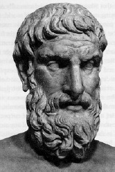

Epikürcüler, MÖ IV. yüzyılda Epiküros (MÖ 341-270) tarafından kurulan bir felsefe okulunun takipçisiydiler. Komünal bir şekilde yaşadılar ve siyasi faaliyetten kendilerini çektiler.
Epikürcüler, var olan her şeyin atomlar ve boşluktan veya boş uzaydan oluştuğuna inandılar. Sonuç olarak ruhun kendisi atomlardan oluşur; maddedir ve bedenle beraber ölür. Epikürcüler, tanrılara inanıyor, ama onların insanlarla uğraşamayacak kadar kendi hazlarıyla meşgul olduklarını düşünüyorlardı.

Helenistik dünyadaki çoğu felsefe okulunda olduğu gibi, Epikürcüler şu soruya odaklandılar: İyi yaşam nedir? Bu soruya şöyle cevap verdiler: İyi yaşam, mutlu bir yaşamdır. Mutluluk ise hazzın mevcudiyeti ve acının yokluğuydu. Ancak, onların haz ve acı psikolojisi benzersizdi.
Epikürcüler, hazları durgun ve aktif hazlar olarak ikiye ayırdılar. Kinetik bir hazdan keyiflenme; bir arzuya sahip olmayı, arzuyu tatmin etmeyi ve sonrasında o arzunun yokluğunu deneyimlemeyi içine alıyordu. Örneğin yiyecek arzusu, birinin aç olması, yemek yemesi ve sonrasında doyması dolayısıyla kinetik bir hazdır. Statik bir hazdan keyiflenme, zıt olarak, arzuyu azaltmaz. Felsefî tartışmayla meşgul olma statik hazzın bir örneğidir: Felsefe yaptıkça, daha fazla felsefe yapmak istersiniz.
Epikürcüler, bazı kinetik zevklerin gerekli ve iyi olduklarını kabul ederken, hep daha fazlası için arzu yaratan dürtülere karşı uyardılar. Örneğin, hoş tatlıları tüketme alışkanlığı, daha basit tatlılardan haz almayı veya tatlıların tümden yokluğu durumunda tatmin olmayı zorlaştırır. Bu nedenle Epikürcüler, kişinin basit yiyecekler yiyerek ve sadece arada sırada lüksten keyiflenerek genelde sade bir şekilde yaşaması gerektiğine inandılar.
EK BİLGİLER:
1. Epikürcüler’in savunduğunun aksine, “Epikürcü” kelimesi, “duyusal hazzın, özellikle iyi yiyecekten ve rahattan haz almanın peşine düşmeye kendini adamış” anlamında kullanılır.
2. Epiküros’un Atina’da kurduğu okul, “Bahçe” olarak bilinirdi.
3. Romalı filozof Lucretius (MÖ 99-55), bir Epikürcüydü. Doğa felsefesi ve Epikürcü metafizik hakkında De rerum natura (Şeylerin Doğası Üzerine) adlı uzun bir şiiri bulunmaktadır.